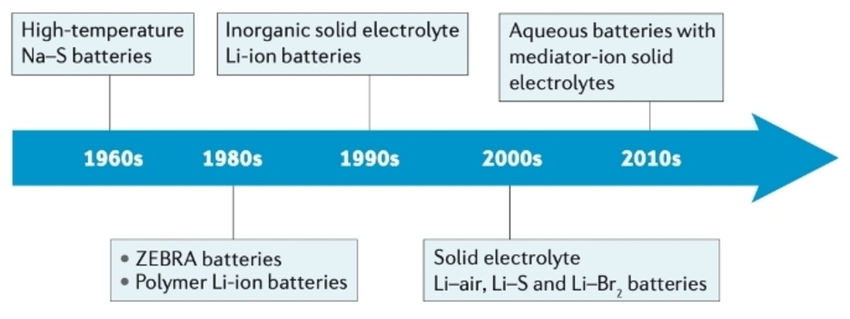
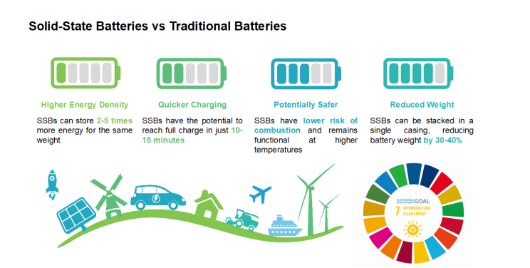
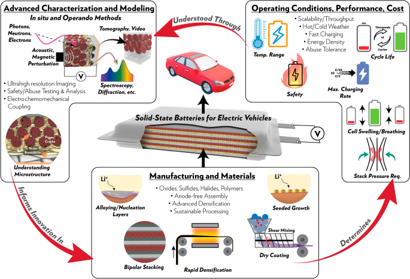
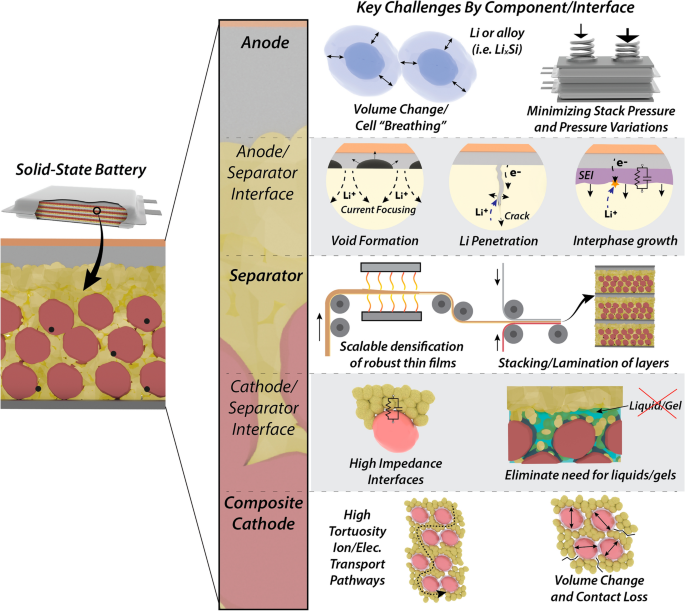
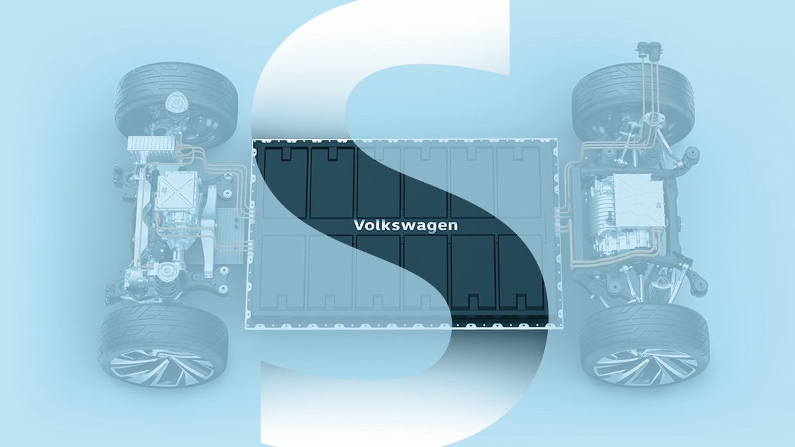
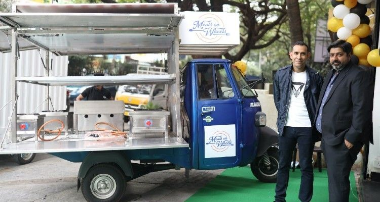

The electric vehicle (EV) industry is on the cusp of a significant transformation, driven by advancements in battery technology. Among these innovations, solid-state batteries (SSBs) are emerging as a game changer, promising to enhance the safety, efficiency, and performance of electric vehicles. This newsletter delves into the potential of solid-state batteries and their implications for the future of electric mobility.
Historical Development of Solid-State Batteries
The concept of solid-state batteries has been around since the mid-20th century, but only recently has the technology gained traction due to advances in material science. Early prototypes faced significant challenges, such as low conductivity and high production costs. Over the past decade, breakthroughs in solid electrolytes—like ceramic and polymer-based materials—have propelled the technology closer to commercial viability. Industry leaders and researchers are now collaborating to refine these batteries for mass production.

How They Differ from Conventional Lithium-Ion Batteries
The primary distinction between solid-state and lithium-ion batteries lies in the electrolyte. Conventional lithium-ion batteries use a liquid electrolyte, which can lead to dendrite formation, leakage, and fire hazards. In contrast, solid-state batteries eliminate these risks by using a solid electrolyte, which is non-flammable and prevents dendrite growth. Additionally, solid-state batteries can achieve higher energy density, translating into longer driving ranges for EVs and improved performance across various applications.

Technological Advancements in Solid-State Batteries
- Material Innovations
Advancements in materials have been pivotal in overcoming the limitations of solid-state batteries. Researchers are developing solid electrolytes such as sulfides, oxides, and polymers, each offering unique benefits. Sulfides, for instance, provide high ionic conductivity, while oxide-based electrolytes offer superior mechanical strength. These innovations are enabling the production of batteries that are not only efficient but also scalable.
- Enhanced Energy Density and Performance Metrics
Solid-state batteries are renowned for their ability to store more energy per unit of volume compared to traditional lithium-ion batteries. This higher energy density is achieved by using advanced anodes, such as lithium metal, which significantly increases storage capacity. EVs powered by solid-state batteries could potentially offer ranges exceeding 500 miles on a single charge, making them game-changers for the industry.
- Safety Improvements
Safety is a critical concern for battery technology, particularly in EVs. The non-flammable nature of solid electrolytes in solid-state batteries dramatically reduces the risk of thermal runaway, a common issue with liquid electrolytes. Moreover, the solid structure prevents leakage and degradation, enhancing the overall lifespan and reliability of the battery.

Benefits of Solid-State Batteries for Electric Vehicles
- Increased Range for Electric Vehicles
One of the most compelling benefits of solid-state batteries is their potential to significantly extend the range of EVs. With higher energy density, these batteries allow manufacturers to design vehicles capable of traveling farther without increasing battery size or weight. This advancement addresses one of the primary concerns among consumers—range anxiety.
- Faster Charging Times
Solid-state batteries support higher charging currents without overheating, enabling much faster charging times. This feature is crucial for EV adoption, as it aligns with consumer expectations for convenience similar to refueling traditional gasoline vehicles.
- Reduced Risk of Thermal Runaway
Thermal runaway, a phenomenon where a battery overheats uncontrollably, has been a critical safety issue for lithium-ion batteries. The solid electrolyte in solid-state batteries eliminates this risk, making them inherently safer for use in EVs and other high-energy applications.

Challenges in Adopting Solid-State Batteries
- High Manufacturing Costs
One of the primary barriers to the widespread adoption of solid-state batteries is their high production cost. Manufacturing processes require expensive materials and precise techniques, making them less cost-competitive compared to lithium-ion batteries.
- Scalability Issues
Scaling up the production of solid-state batteries to meet global demand presents significant challenges. Current manufacturing technologies are not yet optimized for mass production, and issues like material availability and production efficiency must be addressed.
- Technical Limitations and R&D Requirements
Despite their potential, solid-state batteries face technical hurdles, including low ionic conductivity at room temperature and the need for advanced interface engineering. Continued research and development are essential to overcome these challenges and bring the technology to market.

Case Studies: Implementations in Electric Car Models
Several automakers are actively integrating solid-state batteries into their electric vehicle models, showcasing the technology’s potential to enhance performance and driving range:
- Toyota Motor Corporation : The company plans to introduce solid-state batteries in its electric vehicles by 2027 or 2028. These batteries aim to provide a range of up to 750 miles on a single charge with fast charging capabilities of around 10 minutes, addressing key consumer concerns about range and charging time.
- Volkswagen and QuantumScape : Volkswagen has partnered with QuantumScape to develop solid-state batteries that promise higher energy density and quicker charging times compared to conventional lithium-ion batteries. AlthVolkswagen has partnered with QuantumScape to develop solid-state batteries that promise higher energy density and quicker charging times compared to conventional lithium-ion batteries. Although still in development, initial results indicate significant improvements that could transform future EVs.

- BMW Group : BMW is testing solid-state battery technology in prototype vehicles. These tests are crucial for understanding real-world performance, including challenges related to manufacturing and integration into existing vehicle platforms.
- Omega Seiki Mobility : In collaboration with New York-based C4V, Omega Seiki has announced plans to manufacture advanced chemistry cells and solid-state batteries in India. This initiative aims to leverage India's Production Linked Incentive (PLI) scheme for lithium-ion battery manufacturing. Their solid-state batteries are expected to provide higher energy density (200 Wh/kg) and improved safety without toxic components like nickel and cobalt.

- Tata Motors : Tata Motors is exploring partnerships with various technology firms to develop solid-state battery solutions for its EV lineup. The company aims to enhance the performance and range of its electric vehicles while addressing safety concerns associated with traditional lithium-ion batteries.
- Indian Institute of Technology, Madras : Various IITs across India are conducting research on solid-state battery technologies focusing on improving energy density and operational stability. Collaborations with industry players aim to translate these research findings into commercially viable products for the Indian market.
- Ather Energy : Ather Energy has expressed interest in incorporating solid-state batteries into its electric scooters as part of its long-term strategy to improve range and reduce charging times significantly.
In conclusion, solid-state batteries represent a pivotal advancement in EV technology. As research progresses and production challenges are addressed, these batteries could redefine the capabilities of electric vehicles both internationally and within India’s rapidly evolving market landscape. The next few years will be critical as we witness the transition from traditional lithium-ion systems to this innovative technology that promises enhanced safety and efficiency in electric mobility.